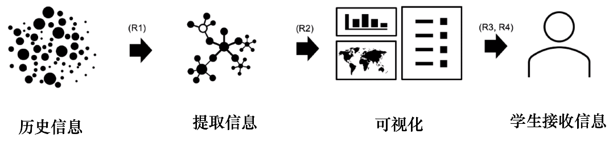
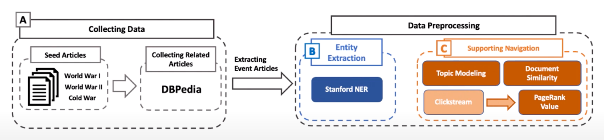
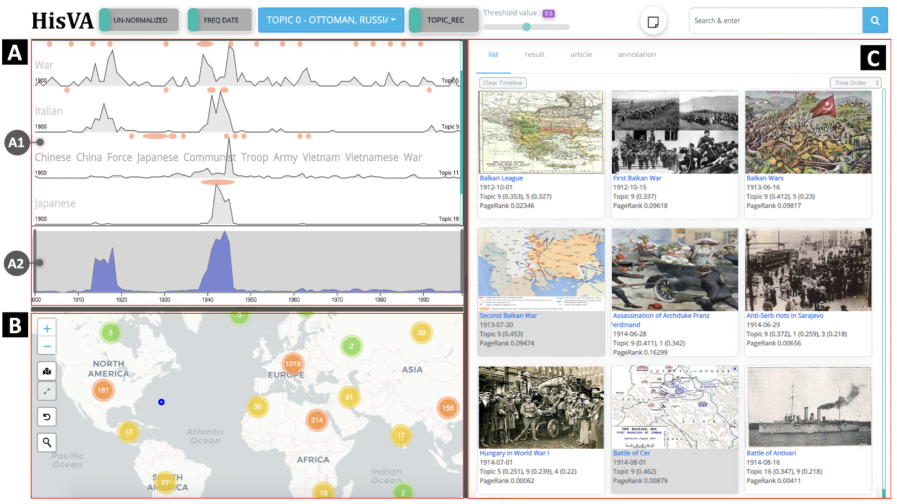
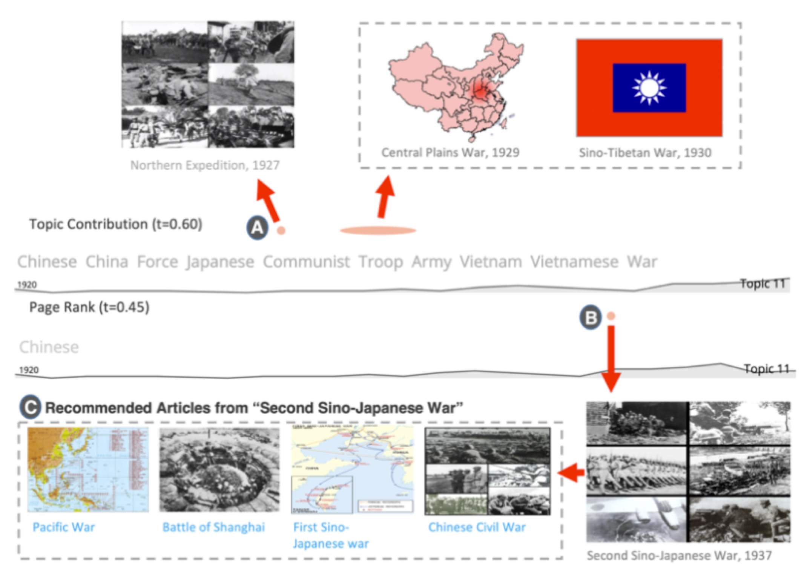

论文：HisVA: A Visual Analytics System for Studying History
作者：Dongyun Han, Gorakh Parsad, Hwiyeon Kim, Jaekyom Shim, Oh-Sang Kwon, Kyung A Son, Jooyoung Lee, Isaac Cho, and Sungahn Ko
发表：IEEE Transactions on Visualization and Computer Graphics. 2021
历史教学中，教师如果使用组织良好、论证充分的材料，会导致学生在理解历史时视角狭窄，并妨碍学生自发地调查历史事件。这项工作提出了一个视觉分析系统HisVA，可以使用事件、地图和资源三个视图对维基百科中的历史事件进行探索。文章通过两个使用场景，一个用户研究以及在课堂上部署，对系统进行评估。
作者简介
这个工作主要是由韩国国立蔚山科学技术院和犹他州立大学合作完成。其中Isaac Cho是VAiRoma: A Visual Analytics System for Making Sense of Places, Times, and Events in Roman History的作者。
背景&动机
在传统的历史课上，老师根据教科书进行讲授，教科书中包含了历史学术领域的主流论点，条理清晰。这种方式在向学生传授历史知识方面具有优势。但是，这也意味着学生从教科书和老师那里被动地获得知识，而很少自己调查和分析历史事件和背景。因此，不利于他们自己构建知识，也不可能对历史事件形成自己的观点。
在现在的历史教学中，越来越多的老师开始强调在历史知识的获取过程中，要以学生为中心，培养学生的批判性思维能力和自己的历史观的重要性。这一趋势与建构主义教育理论（constructivism education theories）相吻合。但是，鼓励学生积极的主动学习,以建构自己的知识体系是具有挑战性的：
- 缺乏背景知识：由于学生对历史知识知之甚少，对历史事件也不熟悉，他们往往不能自己找到合适的学习材料。
- 缺乏有效指导：可供学习的历史信息量太大，这意味着在探索历史事件的过程中，认知和分析的负担都很重。如果没有适当的指导，学生很难完成任务。
文章贡献
- 需求：历史教育的任务分析和提炼系统需求
- 系统：设计了一个HisVA系统，提供有效的时空探索
- 评估：对系统进行了用户研究和定性分析，并在课堂部署进行评估
相关工作
以学习者为中心的历史教育：在传统教育中，可以将教学方法分为两类:以教师为中心的教学和以学生为中心的教学。本文是以学习者为中心的教学，强调创造一个学生可以构建自己知识的学习环境是很重要的。但是目前，这种方法存在一个障碍，即对于非历史专业的学生，他们的领域知识较少，信息太多。因此，为学生提供系统的指导和相关的资料，使他们能够自学变得更加重要。
历史教育的工具：现在有各种各样的工具支持学习历史。大概分为两种，一种是为学生提供历史内容，一种是支持学生更积极的学习历史，例如VAiRoma是具有此目的的可视化工具。它通过使用地图、图表和主题视图来提供地理、趋势和主题信息，旨在帮助用户有效地学习罗马历史。与现有的工作相比，HisVA能更好的为学生提供指导有效的缩小搜索空间。
维基百科和历史文章：本文主要选取的数据源是维基百科。维基百科相较于其他的历史文章准确率为80%，在主题范围和覆盖面方面涵盖了更多的近期事件（尤其是19世纪的）。而且，维基百科比大英百科全书更具可读性。同时，维基百科及其衍生的数据集，如clickstream和DBpedia吸引了各个领域的研究人员。这为本文的工作提供了很好的技术支撑。
事件可视化：目前有大量的事件可视化技术或系统。基于不同领域的，例如在新闻领域，LeadLine，可以从新闻和社交媒体帖子中自动检测事件，并允许用户分析它们。在教育和学习分析领域，例如，Viseq的这个工作，帮助用户根据学习行为来识别不同的学习者群体。本文的目标是直接帮助学生学习，而之前的工作则侧重于日志分析。
任务分析

- 提出一个足够小但有效的探索空间;
- 提供历史事件的空间和时间背景;
- 在历史事件的调研过程中辅助信息的获取；
- 将不同的事件联系起来，找到它们之间的关系。
数据处理

- 选择一组感兴趣的维基百科文章作为起点。这个工作选的是“第一次世界大战、第二次世界大战、冷战”。
- 这些文章被用作种子，从DBpedia中找到所有与主题文章有关的被标记为 “事件 “的文章的文章，形成维基百科文章之间的语义关系。
- 用斯坦福命名实体识别器（SNER)从每篇文章中提取日期和地点实体，并进行预处理，为用户提供事件的空间和时间背景。
- 统计与每个事件相关的日期和地点的数量，并将那些显示频率最高的信息作为每个事件的代表性时间和空间信息。例如，”德国”和 “1945年3月” 在 “第二次世界大战”一文中分别被提及98次和6次，所以用它们来代表 “第二次世界大战”的地点和日期。
可视分析系统

事件视图：展示了多个事件图表和一个概览图。页面上放了20个基于计算的主题和时间信息构建的事件图表。这些图表最初是按照建模算法产生的顺序排列的，但用户可以滚动视图，交互式地调整图表顺序，并隐藏和显示他们选择的任何事件图表。每张图表显示10个主题关键词，这些关键词按其对每个主题的贡献度排序。
概览视图：事件视图底部的折线图，按时间显示文章的汇总数量，让用户看到不同时间段的事件数量和特定时间范围的重要事件。
地图视图：显示与历史事件相关的地点。圆点上的数字表示该地区的总事件数。用户可以通过点击、鼠标滚轮等交互手段放大地图，放大后点击事件，事件就会在列表视图中被搜索并突出显示，以便阅读。
资源视图：帮助用户查看事件详细信息，包括四个子视图—列表、结果、文章和注释视图。列表视图展示了历史事件，允许用户按顺序访问一系列事件，如缩略图、事件日期、与文章相关的主题编号、主题权重和页面排名值。为了有效探索，列表视图允许用户按日期、重要权重和主题对事件进行排序。重要性权重高于阈值的事件以灰色显示。
系统评估
- 使用场景：场景一为调查历史事件的关系；场景二为以自我为导向的方式对历史事件进行视觉探索。
- 用户调研：任务一是自由探索，找到三个有趣的事件；任务二是对一个给定的问题进行叙述。
- 课堂部署：在课堂上部署，获得教师的反馈。
使用场景
- 场景：一名学生搜索二战期间的历史事件，准备在历史课程课上进行小组讨论。

- 在登录HisVA后，她在主题视图中发现了两个有吸引力的主题图—中国和日本，因为这些国家离她居住的地方很近。她过滤掉了其他国家，只留下这两个主题。总结图显示了两个高峰，表明这两个国家在1910-1920年和1938-1945年之间关系密切。
- 由于她知道日本参与了第二次世界大战，并在当时殖民了东南亚的几个国家，她开始好奇，在第二次世界大战之前（即第二个高峰之前），这两个国家一起参与了哪些事件。
- 她注意到中国的事件图用圆点指出了重要的事件，如 “北伐战争”、”中原大战 “和 “汉藏战争”，这些都是与日本、中国和其他东亚国家有关的战斗。
- 为了进一步查看其他人对哪些事件最感兴趣，她打开了人气（popular）推荐选项，又看到了一个日本和中国之间的事件—“第二次中日战争”。
- 她开始阅读列表中的文章。首先，她阅读了 “第二次中日战争”，其中描述了日本如何在1937年发起并继续进行殖民中国的战争，直到第二次世界大战结束。阅读这篇文章时，她发现Sino是中国的旧称，
- 她发现，中日战争一直持续到第二次世界大战结束。提出了一个问题：为什么日本要在与中国的战争中参加第二次世界大战？
- 通过阅读《太平洋战争》这篇文章，她了解到日本和美国之间的关系一直很融洽，但当日本在1931年入侵满洲时，日本和美国之间的关系开始紧张。尽管有西方国家（如美国、英国、法国）的警告，日本在接下来的十年里继续进行殖民扩张。最后，美国在1941年停止了日本的石油进口，以平息日本的扩张主义。此时，日本知道，与美国的关系已经断绝，与中国的战争缺乏石油，将以日本的失败而告终。
- 日本最终决定袭击夏威夷（日本偷袭珍珠港）。
这个case证明了HisVA能够有效地帮助用户根据个人偏好、知识和视角来探索事件。这种探索可以改善用户的学习体验，并进一步激励未来的自主学习。
未来工作
- 加入其他数据（如百科全书）到HisVA系统中
- 对事件探索过程进行深入分析（例如，用户如何对一个问题得出不同结论）
讨论
- 优点：motivation 很充分；系统易用，对用户友好；定性评估做的很详尽。
- 缺点：没有方法上的创新，也没有可视化上的创新；部分章节写的太长（例如，任务分析、评估）；没有定量分析。
- 启发：对于写教育类主题的文章比较有参考价值。
✉️ zjuvis@cad.zju.edu.cn